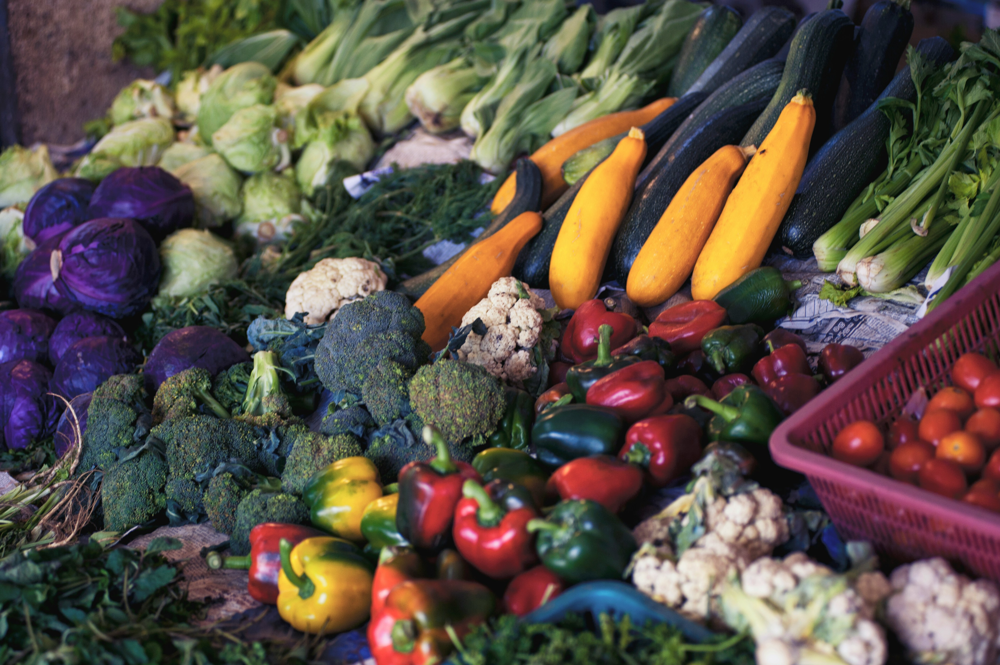
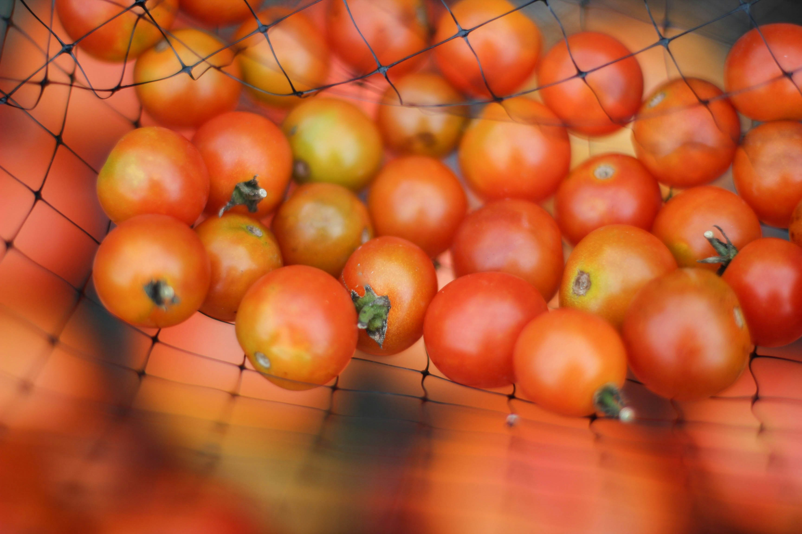

Vegetais são melhores que legumes? postado 20 março 2022  Vegetais e legumes é do mesmo grupo, porém, vegetais é nome do grupo.Essa questão surgiu em uma competição de vegetais, um dos competidores disse que tomates são frutas não legumes, outro competidor disse que legumes são vegetais. Logo após dessa discussão ouve uma briga que... Leia mais
Bolo de tomate postado 10 março 2022  O novo bolo chamado bolo de tomate foi feito na italia, por uma senhora de 102 anos. Diz ela que confundio o molho de morango com tomate, e os ingredientes com outros temperos, após isso, vendeu nas ruas, que deu a fama.A formula é 200g de... Leia mais
Filme tomate assasinos fazem pessoas pararem de compra tomate postado 10 março 2022 Nesta manhã de quinta-feira, vendedores ficaram assustados ao verem que seus tomates não foram comprados por nenhum cliente, após uma pesquisa regional, notaram que a maioria das pesssoas assistiram o filme chamado "O Ataque Dos Tomates Assasinos", é um filme de comédia, mas, as pessoas acreditaram na ficção, ainda mais com o assasinato do... Leia mais